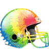

99.12, a clinched bracket spot, and Kelce and Moore on the bench.
196Wk 1
173Wk 2
150Wk 3
144Wk 4
124Wk 5
123Wk 6
148Wk 7
164Wk 8
132Wk 9
176Wk 10
99Wk 11
1stRecord10-1
1stRank#1
1stPoints for1629.5
2ndPoints against1234.2
1stMAXPF1938.8
6thEfficiency84.0%
12thDraft slot1.12
7thFAAB left$493
3rdBest week195.70Week 1
8thFAAB spent$7
Moves13
The desk file
Nemesis
His own lineup. A 167.74 was available and he scored 99.12.
The desk is watching
Johnny4Skins in Week 12, and where he lands in the seeding.
The balance sheet
The richest portfolio in the league, 82,202 in market value, with 10% of it on IR or out. Draft picks make up 32% of it; the 30-day market move is -1.0%. Status: stable. Since Week 10: no change in rank, +729 in value.
Portfolio value
Stable Stable: Zygon's portfolio is holding. Boring, but solvent.
Portfolio value82,202
League rank#1 of 12
30-day market move-839 (-1.0%)
On IR or out8,618 (10%)
Draft capital26,085
League average63,202
PeriodOct 9 → Nov 25Low71,688High82,202Change+6,804
PICK 32%WR 24%RB 21%QB 13%TE 10%
Holdings
Asset
Jaxon Smith-Njigba
WR
10,691
+818
Trey McBride
TE
6,330
-408
Kenneth Walker III Out
RB
6,113
-724
Patrick Mahomes
QB
5,911
+532
Chase Brown
RB
2,983
-264
Emmett Johnson
RB
2,589
+1,120
DJ Moore
WR
2,327
+247
Baker Mayfield
QB
2,325
-256
Blake Corum
RB
2,296
+411
Ollie Gordon II
RB
1,930
-86
Jalen Coker
WR
1,835
-917
Travis Kelce
TE
1,770
+79
Jordan Addison Doubtful
WR
1,720
-56
Daniel Jones
QB
1,394
-184
Jacoby Brissett
QB
1,392
-155
Ja'Kobi Lane
WR
1,344
-241
Chris Rodriguez Jr.
RB
1,135
+216
Chris Brazzell II IR
WR
785
+211
Rashod Bateman
WR
674
+194
Kaytron Allen
RB
229
-69
Emanuel Wilson
RB
185
-880
Barion Brown
WR
159
+1
Draft picks owned
Pick
Value
30d
2027 1st (Late)
2,513
-53
2028 1st
2,234
-68
2028 1st via Hades9mm
2,234
-68
2029 1st
1,939
-26
2029 1st via Hades9mm
1,939
-26
2027 2nd (Late)
1,456
-5
2027 2nd (Late) via Hades9mm
1,456
-5
2028 2nd
1,407
-3
2028 2nd via Hades9mm
1,407
-3
2029 2nd
1,287
+4
2029 2nd via Hades9mm
1,287
+4
2028 3rd
1,014
-14
2028 3rd via Hades9mm
1,014
-14
2027 3rd (Late) via StealingGas
1,012
-29
2027 3rd (Late)
1,012
-29
2027 3rd (Late) via Hades9mm
1,012
-29
2029 3rd
931
-32
2029 3rd via Hades9mm
931
-32
Legend: what these numbers mean
Values: FantasyCalc dynasty trade values, superflex, 12 teams, full PPR.
Portfolio value
The combined FantasyCalc value of every player on the roster plus every future pick owned. Players outside FantasyCalc's top 1,000 count as zero.
League rank
Where this portfolio sits among all 12, highest value first.
30-day market move
How much the market moved the value of the players and picks held right now over the last 30 days, in points and percent. Trades do not change it.
On IR or out
Value sitting on players who are on IR or listed Out, PUP, Doubtful or Suspended, and the share of the portfolio that is.
Draft capital
The combined value of the future picks this manager owns after trades. Picks use FantasyCalc's own pick values. For the next draft the tier (early, mid or late) comes from the original owner's current draft slot.
League average
The average portfolio value across all 12 managers.
Status flag
Market crash: the 30-day market move is -5% or worse, or 25% or more of the value is on IR or out. Correction: down 2.5% or more. Bull run: up 5% or more. Stable: anything else.
The season archive
2026 10-1
The season
Zygon is 1st at 10-1 with 1629.5 points, 1st in the league in scoring. The high was 195.70 in Week 1 and the low 99.12 in Week 11. 13 transactions so far (1 trade), $7 spent on the wire, $493 left, and the rookie pick sits at 1.12. Lineup efficiency: 84.0%.
Game log
Wk
Opponent
Res
PF
PA
Bench left
MVP
1
vs Johnny4Skins
W
195.70
125.28
4.7
K. Walker III 34.1
2
vs YesChef23
W
172.96
80.10
6.3
J. Smith-Njigba 42.5
3
vs Sarge71
W
149.78
117.88
40.2
J. Smith-Njigba 35.4
4
vs Hades9mm
W
144.02
121.76
36.1
K. Walker III 30.9
5
vs C33DeezNutzz
L
124.36
154.24
21.8
J. Brissett 26.3
6
vs fumbduckdumbfuck
W
122.80
90.72
14.2
K. Walker III 27.9
7
vs

CMac91
W
148.38
114.40
30.1
J. Smith-Njigba 31.3
8
vs Painty69
W
164.40
114.98
41.4
T. Higgins 37.5
9
vs Snipe58
W
131.70
96.40
12.3
K. Walker III 36.3
10
vs StealingGas
W
176.24
132.30
33.6
P. Mahomes 35.4
11
vs Darkspaces
W
99.12
86.18
68.6
P. Mahomes 25.0
Transactions
Week 11
🤝 TRADEwith Hades9mm
Got
DJ Moore (WR, BUF)
Travis Kelce (TE, KC)
2027 2nd-round pick
2027 3rd-round pick (from StealingGas)
2027 3rd-round pick
2028 1st-round pick
2028 2nd-round pick
2028 3rd-round pick
2029 1st-round pick
2029 2nd-round pick
2029 3rd-round pick
Sent
Tee Higgins (WR, CIN)
Harold Fannin Jr. (TE, CLE)
Week 10
+ ADDJacksonville JaguarsDEF
− DROPNew England Patriots
Week 8
+ ADDNew England PatriotsDEF
− DROPNew York Jets
Week 7
+ ADDNew York JetsDEF
− DROPJacksonville Jaguars
Week 5
+ ADDJacksonville JaguarsDEF
− DROPChicago Bears
Week 4
+ ADDJacoby BrissettQB$5
− DROPTory Horton
+ ADDChicago BearsDEF
− DROPDetroit Lions
Week 3
+ ADDRashod BatemanWR
− DROPTua Tagovailoa
+ ADDDetroit LionsDEF
− DROPTampa Bay Buccaneers
+ ADDEmanuel WilsonRB
− DROPGreg Dulcich
Week 2
+ ADDTampa Bay BuccaneersDEF
− DROPDetroit Lions
Week 1
+ ADDOllie Gordon IIRB$2
+ ADDBarion BrownWR
The takes
Issue 12 prediction. Johnny4Skins beats Zygon in Week 12: The desk gives Zygon 67% on 148 to 124. Johnny4Skins scored 67.98 last week with Lamar Jackson and Jalen Hurts on IR, but he needs the win to hold the sixth seat and Zygon has already clinched. Deadline: Week 12 final.
“Time to see what Emmett Johnson is really made of”
Issue 11: Zygon
“Time to see what Emmett Johnson is really made of”
Issue 11: Zygon
Issue 11 prediction. Darkspaces beats Zygon in Week 11: The desk gives Zygon 75% on 153 to 118. Darkspaces scored 103.44 last week, and the market feed lists Drake Maye and Kenneth Walker III, Zygon's running back, as Out. A win would put 9-1 Zygon down for the second time. Deadline: Week 11 final.
“I’m sorry I didn’t mean it, don’t hate me, I need insurance for playoffs”
Issue 10: Zygon, to Darkspaces
“You can calculate deez nuts”
Issue 10: Zygon
Issue 10 prediction. StealingGas beats Zygon in the Match of the Week: The desk projects Zygon, 150 to 143, and Puka Nacua is listed Doubtful, which is what makes this bold. A win would put 8-1 Zygon down for the second time. Deadline: Week 10 final.
Issue 9 prediction. StealingGas posts the league's top score for the third week in a row: He scored 157.4 in Week 7 and 173.6 in Week 8, both the top score, and the desk projects 145 against fumbduckdumbfuck. Zygon is projected at 153, higher than his, which is what makes this bold. Deadline: Week 9 final.
“Mahomes leg looking stronger every week.”
Issue 7: StealingGas, on Zygon's quarterback
Issue 7 prediction. Zygon takes the highest MAXPF from Hades9mm: The two are 0.02 MAXPF points apart, Hades9mm at 1032.96 and Zygon at 1032.94. One better best-possible lineup flips the leader. Deadline: Week 7 final.
“Someone go give Josh Allen food poisoning or something so I can keep my undefeated status”
Issue 6: Zygon, before Josh Allen's game
“Josh Allen may not have shit himself from food poisoning but I bet he did when his teammate blocked that FG for the win”
Issue 6: Zygon
Issue 6 prediction. Zygon and Johnny4Skins both reach 5-1: Zygon needs a bounce-back against fumbduckdumbfuck and Johnny4Skins plays CMac91. Deadline: Week 6 final.
Issue 5 prediction. Zygon is still the only unbeaten team after Week 5: C33DeezNutzz is the best process in the league. The formula has not broken. Deadline: Week 5 final.
“Make me regret it when Walker tears his ACL”
Issue 4: Zygon
Issue 4 prediction. Zygon stays top-2 through Week 6: The formula has not broken. Health is the only landmine and the nickname is still cashing.
Issue 3 prediction. Zygon is 3-0 after Week 3: The formula keeps printing, and the nickname has not cost a single win. Health is the only landmine. Deadline: Week 3 final.
“Your AI seems to confirm my team name selection”
Issue 2: Zygon
Issue 1 prediction. Zygon vs Johnny4Skins is decided by under 5 points: The platform has it 149.00 to 148.32. Deadline: Week 1 final.
The drama
98°F
Nine Picks for Two Receivers
Hades9mm sent Kelce, DJ Moore and nine picks (the 2027 second and third, all three rounds of 2028 and 2029, and StealingGas's 2027 third) to Zygon for Higgins and Fannin. His picks are now valued at 0, Darkspaces shared a calculator reading of Robbery, +7402 to Zygon, and Hades9mm answered that Higgins is still a top-10 receiver and that he is all in.
He is 8-3 and second, and the market shows no picks in his portfolio.
Issue 12
54°F
The Emmett Johnson Watch
The only conversation in this week's chat was Zygon saying it was time to see what Emmett Johnson is made of and StealingGas arguing the receiving work was enough. Everything else was the poll and the transaction feed.
No trade talk, no block listings, and a Week 13 deadline that did not come up.
Issue 11
88°F
The Insurance Request
Darkspaces told Zygon he was running options through the trade calculator. Zygon answered 'You can calculate deez nuts', then apologized and said he needs insurance for the playoffs. Hades9mm pointed out those were heavy calculations for an 8-1 team.
The league's best team is the one asking for help, and Darkspaces has four receivers listed. Zygon also said 8-1 only means a seed and the last pick.
Issue 10
80°F
The Bench Beats the Starters Again
Painty69 scored 114.98, 55% of his perfect lineup, with 93.88 left on a 138.48-point bench. Joe Burrow's 42.48 was the best QB benchwarmer of the week while Kirk Cousins started and was the QB of the week at 28.18. Tyler Allgeier added 36.1 as the RB of the week. He lost to Zygon by 49.42 and did not say a word in the chat.
The second-best ceiling in the league belongs to a 2-6 team. The roster and the lineup are not on speaking terms.
Issue 9
86°F
Zygon Takes the Ceiling
Zygon beat CMac91 148.38 to 114.4 to reach 6-1, and his MAXPF of 1211.42 passed Hades9mm's 1179.72. Jaxon Smith-Njigba led at 31.3 as the WR of the week and Trey McBride was the TE of the week. 30.1 stayed on the bench, and the bench scored 78.78.
The formula left 30.1 on the bench and still won by 33.98. The best ceiling in the league changed hands without a single trade.
Issue 8
72°F
The Top Is Decided by 0.02
Zygon beat fumbduckdumbfuck 122.8 to 90.72 to reach 5-1, and Johnny4Skins lost to CMac91 127.72 to 106.06 to fall to 4-2. Hades9mm and Zygon are 0.02 MAXPF points apart at the top, 1032.96 to 1032.94.
Five wins for the formula and a first place held by one tiebreaker's worth of ceiling. The robot lost for the second time and the winner's bench left 17.56.
Issue 7
88°F
The Unbeaten Became Two
Zygon asked the chat for food poisoning on Josh Allen to protect his undefeated status, then lost 154.24 to 124.36 to C33DeezNutzz. Jacoby Brissett, the $5 insurance quarterback, led Zygon at 26.28. Painty69 beat Hades9mm in the same week, so nobody is winless and nobody is unbeaten.
The formula lost to the cleanest lineup in the league. Both asterisks fell in the same week.
Issue 6
72°F
The Block Stays Open, the Chat Keeps Shopping
Zygon asked about Achane and offered about tree fiddy. Darkspaces said Achane is going to sit in his IR slot until next year. Zygon also asked about Swift, and StealingGas said he might be interested in the Swift sweepstakes too. Nothing cleared.
Three bidders, one seller, and no deal. Whoever keeps waiting will find the price after the deadline.
Issue 6
84°F
Swift for a First, Collins on the Block
Darkspaces pitched Swift to Painty69 and Sarge71 for next year's 1st, listed Nico Collins, and said he could be talked into a deal. YesChef23 posted George Pickens. StealingGas said he may throw away all his capital to catch Hades9mm and Zygon, though it may end poorly. Nobody pulled the trigger.
Three names on the block, one tank weighing a pivot, ten games to settle it. The chat went quiet. The trade screen did not.
Issue 5
85°F
Zygon Handcuff Dare + Emmett/Corum Block
Zygon listed Emmett Johnson and Blake Corum with "make me regret it when Walker tears his ACL in a couple weeks." StealingGas called Emmett a legit starter. Darkspaces offered a 2039 3rd as a joke. Nobody forced the issue.
The IR Predictor nickname is still printing, but two premium handcuffs on the block while the board is this hot is unfinished business.
Issue 4
What the desk said
Zygon has clinched a spot in the six-team winners bracket at 10-1, and Painty69 (2-9) and Sarge71 (1-10) are out of it.
The same week Zygon beat Darkspaces 99.12 to 86.18 with 68.62 on his own bench, C33DeezNutzz posted the top score, 155.9, and fumbduckdumbfuck beat Johnny4Skins by 57.02 in the Match of the Week.
Darkspaces shared the Dynastree calculator and it said Robbery, +7402 to Zygon. StealingGas said Zygon got scammed. Zygon's portfolio is up 9,571 since Nov 20 and Hades9mm's is down 8,393, so the numbers voted against StealingGas.
Zygon clinched with 68.62 unused, which is the IR Predictor's way of winning by accident. Darkspaces got within 4.3 of his own best lineup and still lost.
The 4-6 team that wants to sell receivers plays the 9-1 team that asked for insurance. The desk gives Zygon 75%, and Darkspaces needs more than the 103.44 he scored.
Zygon won by 35.3 and still left 12.28 on the bench. Snipe58 started the QB of the week and scored 96.4, which is why his MAXPF is the one that matters.
The two top seeds meet. Zygon is 8-1 with the highest MAXPF, 1561.24, and StealingGas is 6-3 with a Doubtful star he is trying to sell. Projections are the desk's own estimate (average points per game, rounded).
fumbduckdumbfuck beat Snipe58 164.3 to 62.62 for the biggest margin of the week, and Painty69 left 93.88 on the bench in a 49.42-point loss to Zygon, which put his 1339.8 MAXPF at the 1.11.
Emmett Johnson was the best RB benchwarmer of the week at 25.3, on Zygon's bench. Sarge71 has a 26.02-point bench that would all have started and nothing underneath Bijan Robinson, so this is the one deal that fills a real hole.
Third suitor, same receiver, and this time Tyreek Hill comes with him. A commissioner asking for a lower pick has a block open and a buyer with two firsts.
Zygon listed Blake Corum as a dare. Sarge71 is the one team with a running back engine and no help, and the market feed already has him on crash watch.
Five wins for the formula and a first place held by one tiebreaker's worth of ceiling. The robot lost for the second time and the winner's bench left 17.56.
Living the injury nickname, scoring 173, and winning by 93 is elite bit commitment. The rest of the league now files training-room reports in self-defense.
C33DeezNutzz and Zygon both cleared 195, Hades9mm posted the third-best score of the week and spent $170 of FAAB like the sleeper puss woke up hungry, and StealingGas's Future Therapy Bills produced an 83-point crater and the worst-manager award.
YesChef23 cut Terrance Ferguson and Ollie Gordon, two players he drafted, and both were claimed in the first waiver run: Ferguson by Darkspaces for $101, Gordon by Zygon for $2.
Hades9mm carries the league's highest projection at 149.97, Zygon and Johnny4Skins project to a dead heat, and the commissioner plays the man who promised to be kind.
Ollie Gordon for $2 and Barion Brown for free. The IR Predictor does what the name says: finds the injured and the discarded before anyone else notices.